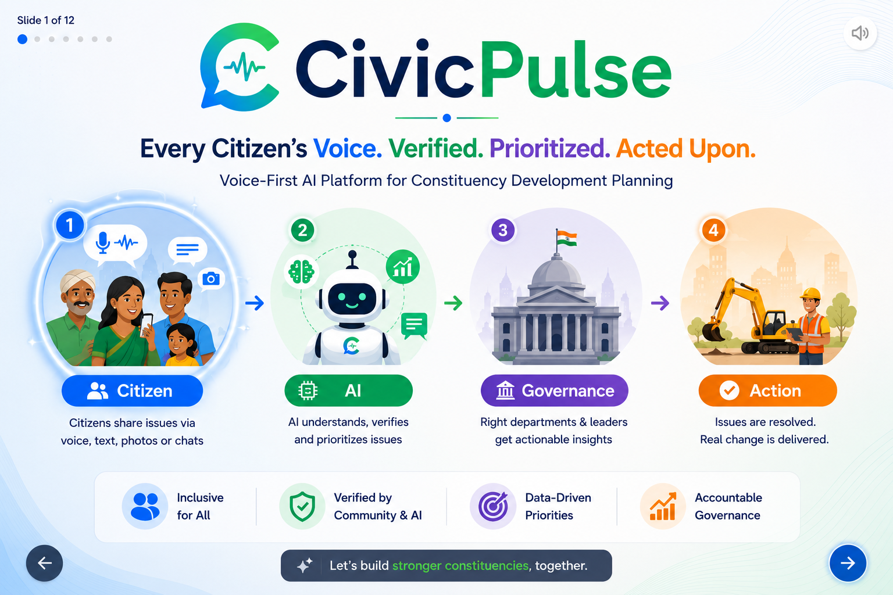
A multilingual, ground-truth-powered operating layer between citizens and elected representatives.
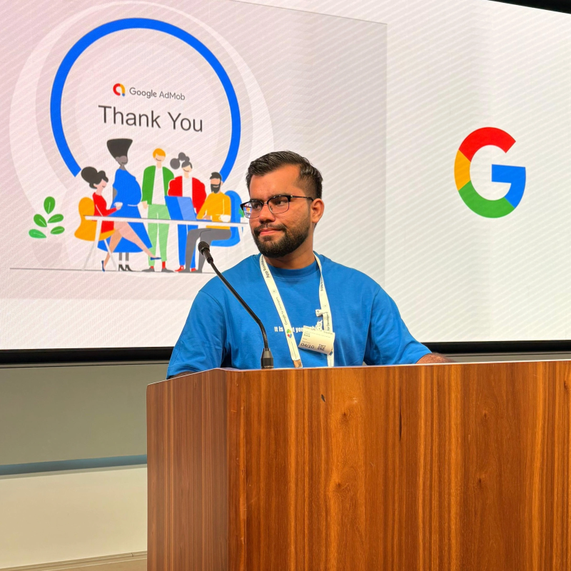
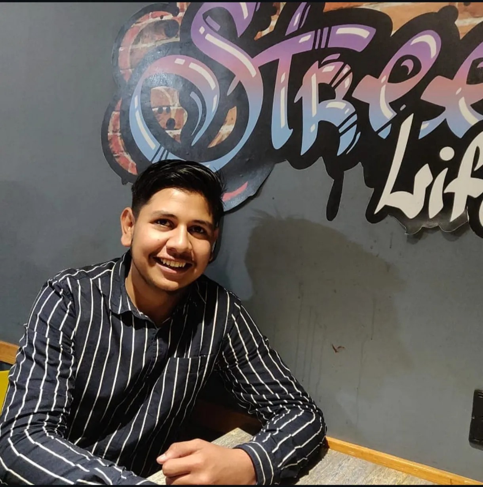
Building scalable cross-platform and core mobile platforms for millions of active learners.
Developing interactive front-ends, clean layouts, and helping integrate smart AI scaffolds.
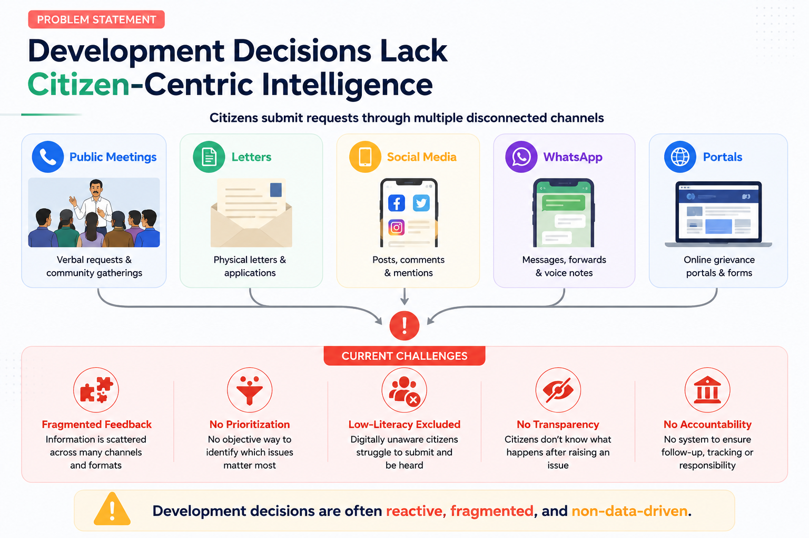
CivicPulse bridges the massive communication gap in Indian governance. Citizens submit suggestions in text, photo, or local voice. The system validates entries and organizes them into actionable, prioritized dashboards.
Nearby registered citizens verify each complaint via a simple **Haan/Nahi (Yes/No)** phone or app notification. This decentralized voting replaces satellite tracking, solves local data trust, and generates real-time ground truth.
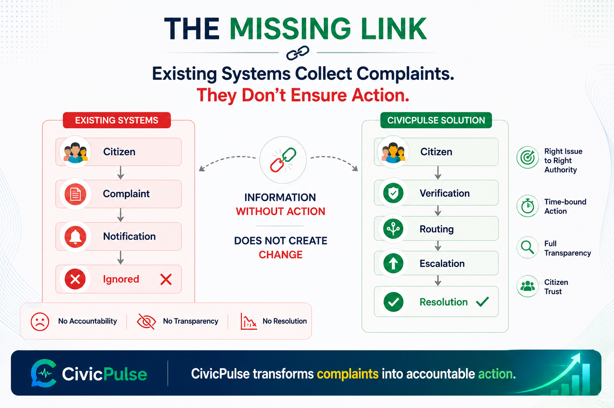
Indian governance systems rely heavily on census records (last updated in 2011), road maps missing 40%+ rural infrastructure, and patchy district files. An AI using this data risks confident hallucinations.
Utilize ISRO Sentinel-2 satellite imagery, ASER education data, NFHS stats, OpenStreetMap, and telecom coverage profiles directly.
Continuous intake of geotagged citizen complaints, voice testimonies, and verified photo attachments create immediate fresh data.
If inputs conflict or are sparse, the algorithm flags the output as "Low Confidence - Field Verify First," preventing fabrications.
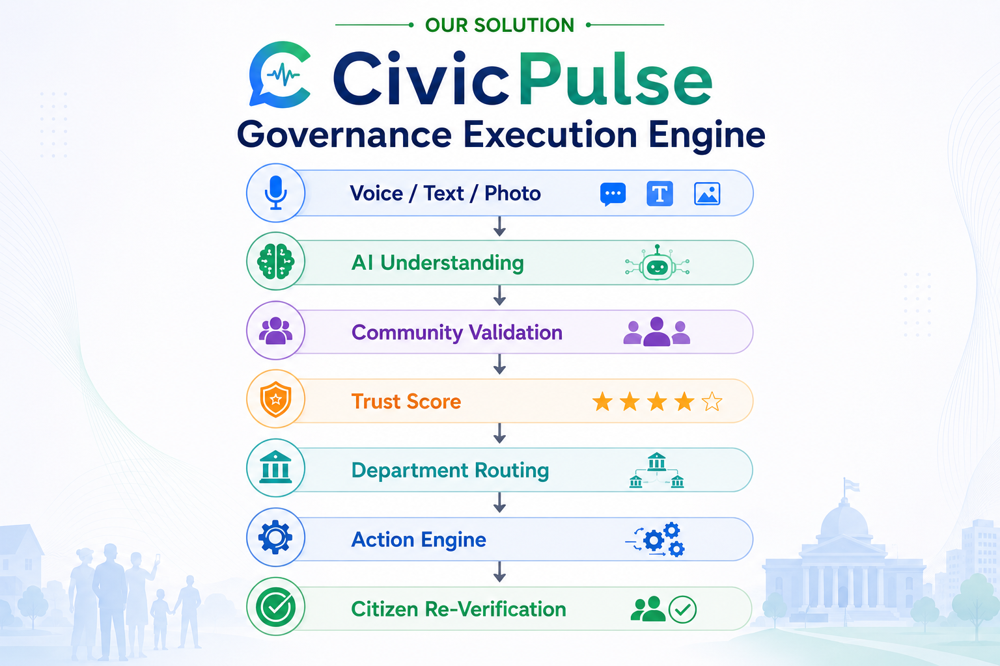
Open systems are vulnerable. Coordinated groups, interest unions, or political workers can systematically flood the platform with fake complaints to artificially force projects to the top of the priority list.
Deduplication linked to Aadhaar identity (using a secure local hash) limits each citizen to **3 unique complaints/suggestions per month**, blocking bulk bot/fake accounts.
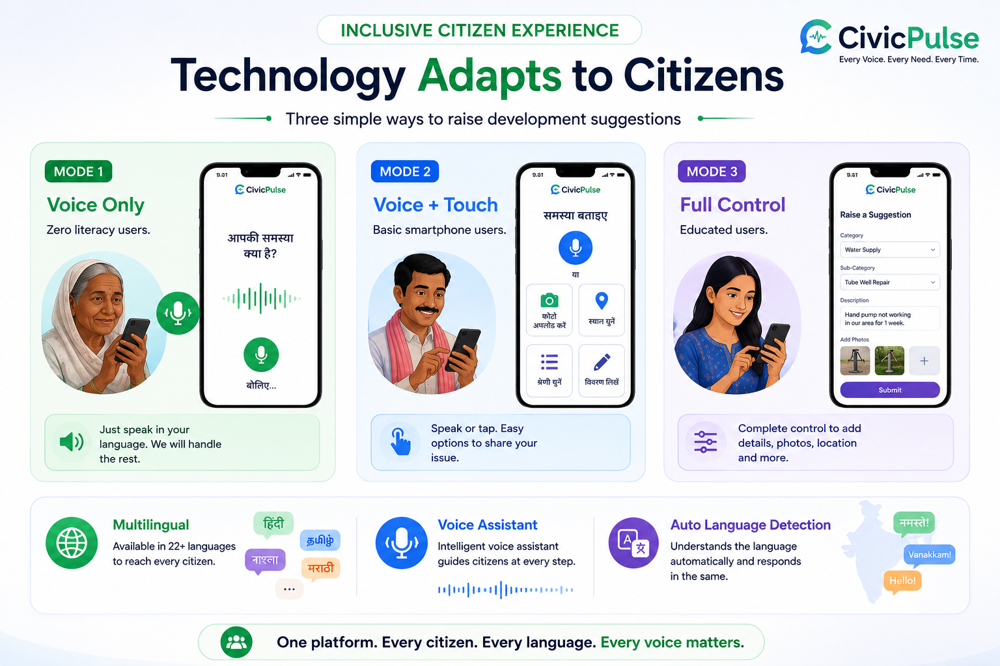
Traditional applications exclude millions of rural and elderly users who cannot read menus, type, or navigate complex screens. Any initial mode selection screen is a friction point.
App speaks a greeting, records local voice feedback, and confirms details back. Zero clicks required.
Visual buttons with clear category icons are displayed in parallel with voice prompts. Supports tap and speak.
Swiping the bottom voice panel away reveals standard text fields, search tools, mapping, and media upload.
Note: Users never choose a mode manually. The system detects behavior and switches modes dynamically.
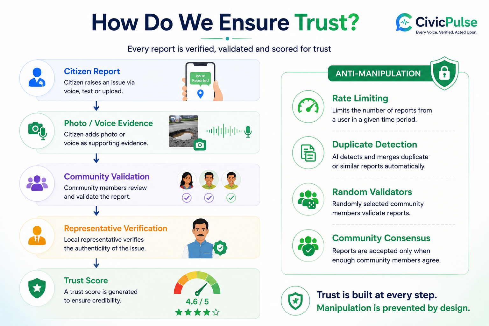
Elected officials have busy schedules and rarely install new analytical apps. Expecting them to log into a dashboard daily is an unrealistic workflow.
Receives a daily automated morning WhatsApp digest containing top 3 issues, urgency metrics, and quick forward trigger replies.
Full access web desk for detail parsing, ward heatmap tracking, department routing, and bulk communication tasks.
MLA app is strictly scoped to local wards. Gram Panchayat (GP) works on a low-end 2G app with a 3-tap action loop to log updates.
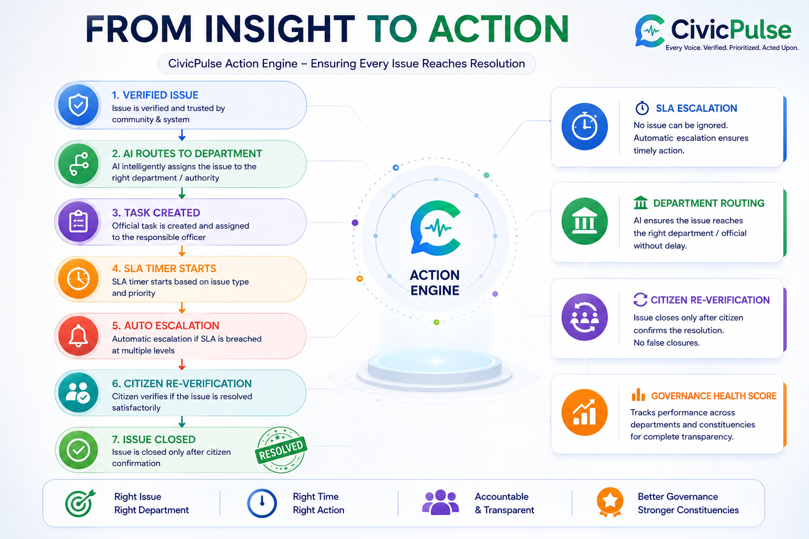
Most citizen portals act as a black hole: complaints go in, silence follows, and citizens lose faith. CivicPulse keeps the loop closed at every checkpoint.
Citizen records complaint. Spoken token issued. Tagged to geolocation database.
AI processes transcription and targets correct authority (GP, MLA, or MP office) with SMS alerts.
Any status shift triggers automated multi-channel alerts (SMS, push, or IVR calls).
When marked complete, the app calls the citizen to verify resolution: **Haan ya Nahi**.
If user selects **Nahi**, the complaint auto-reopens and escalates one level higher in the dashboard queue.
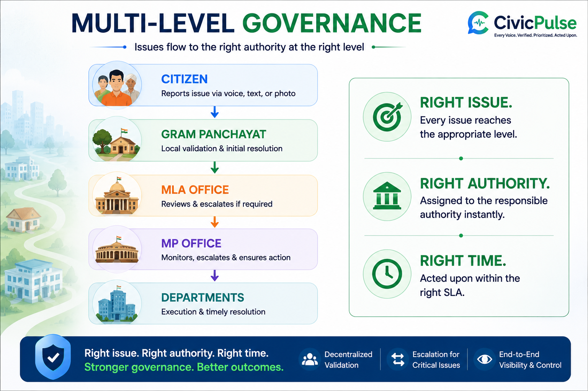
Pure volume-based sorting algorithms systematically favor educated, urban, digitally connected citizens who submit requests easily. The voice of marginalized, remote communities is lost in the stack.
Rich and poor communities do not compete for the same ranking pool. Complaints are filtered independently by local ward boundaries, preventing richer areas from outvoting marginalized zones.
Complaints originating from locations identified with low internet connectivity indices automatically receive a 2.5x weight score multiplier.
Aadhaar identity verification (rather than phone number) allows multiple users sharing a single family phone to register separately, securing equal individual voice quotas.
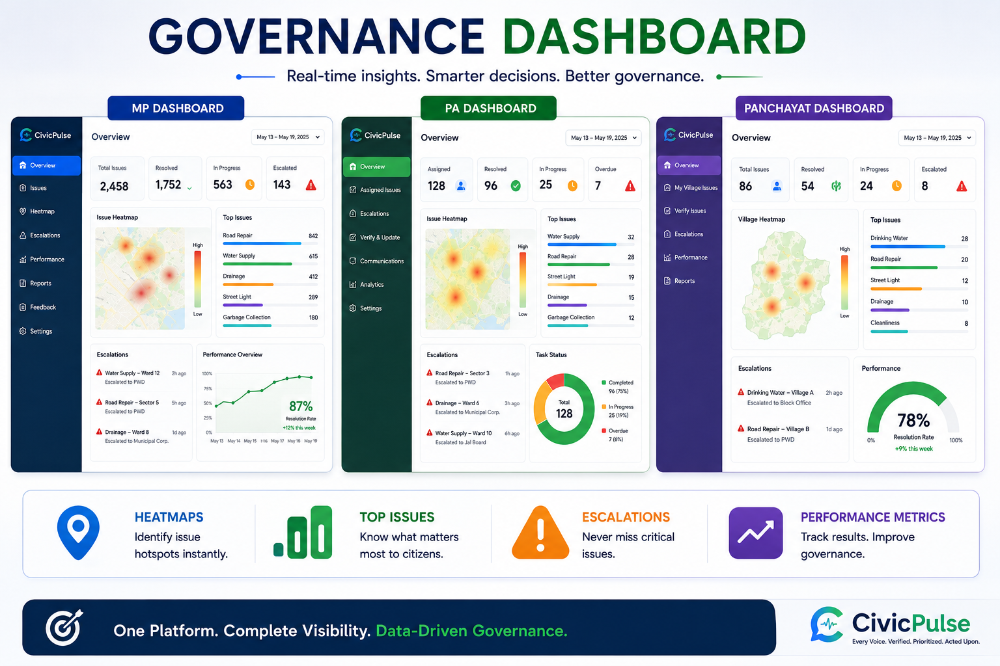
While satellites verify large infrastructure (bridges, highways), they lack the resolution and timeliness to capture small local issues like broken hand pumps, clogged neighborhood drains, or street potholes. Additionally, heavy monsoon clouds completely block visual passes for months.
When a complaint is logged, the system randomizes a target poll of 30 registered users within a 500m radius, requesting a fast **Haan/Nahi** verification feedback loop.
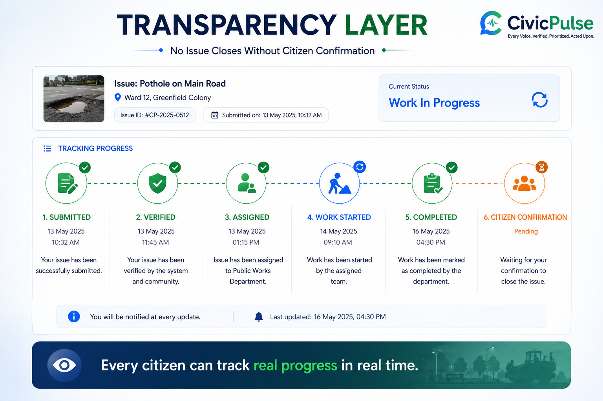
The algorithm strictly recommends and ranks. **AI never makes automated funding decisions.** The final authority remains with human representatives. Transparent calculations are displayed on dashboards for complete auditing.
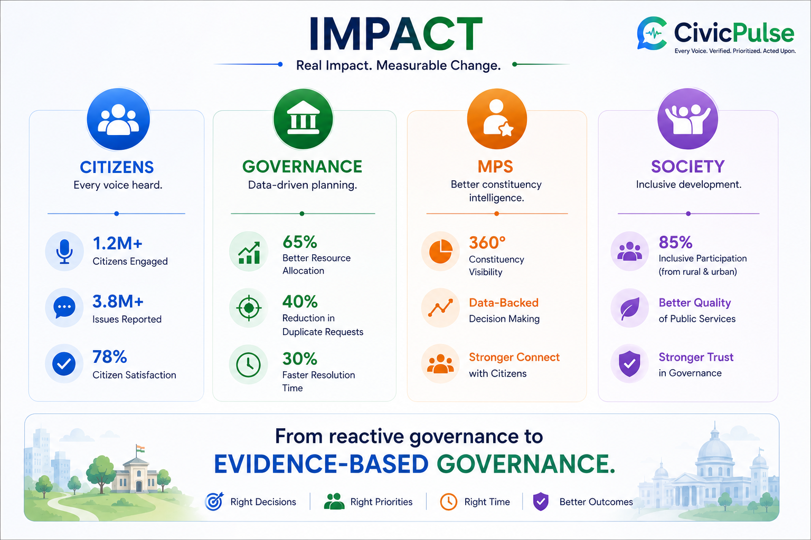
Pilot in 1 constituency. Target 1 MP, 1 PA staff team, and 5 GP wards to audit feature performance.
Scale up to 10 constituencies across 3 states to stress test language algorithms and local systems.
Full national scale deployment across 543 constituencies using standard B2G licensing models.
Consent: Explicit spoken voice consent is requested during enrollment, complying with regulations.
Voice Logs: Raw audio is processed locally. Only text transcripts are saved, protecting user privacy.
Aadhaar Data: Aadhaar numbers are never stored. Only a secure one-way hash is kept to prevent double-voting.
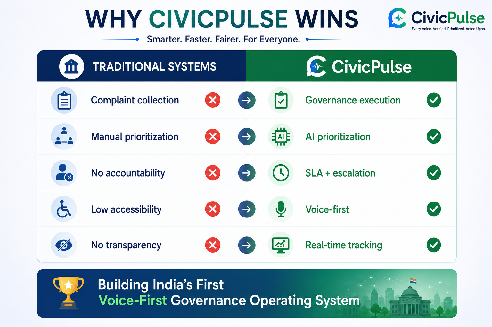
| # | Challenge | Core Solution | Status | Key Insight |
|---|---|---|---|---|
| 1 | Missing Govt Data | 3-Layer Data Stack: Satellite + Open + Citizen | Solved | Citizen data IS the real-time database |
| 2 | Spam & Manipulation | 5-Signal Engine + Aadhaar rate limiting | Solved | Spammer behavior patterns reveal fakes |
| 3 | Zero Digital Literacy | Ambient Voice Overlay + Auto-mode + IVR | Solved | App speaks; user just talks naturally |
| 4 | MP Tech Resistance | Morning WhatsApp digest + Office web panel | Solved | No new app required = zero adoption barrier |
| 5 | Accountability Loop | 6-digit spoken token + verification loop | Solved | Citizen confirms whether work is done |
| 6 | Equity Bias | Geographic isolation + Connectivity multipliers | Solved | Rich and poor communities never compete directly |
| 7 | Verification Limit | Decentralized 30-user neighborhood poll | Solved | Local residents are the best physical sensors |
| 8 | Algorithmic Bias | Public Trust Formula + Human-Always-Decides | Solved | AI recommends and ranks, humans decide |
| 9 | Scale & Regulatory | Phased rollout + DPDP consent + Bhashini API | Post-MVP | Pilot first, prove value, then scale nationally |